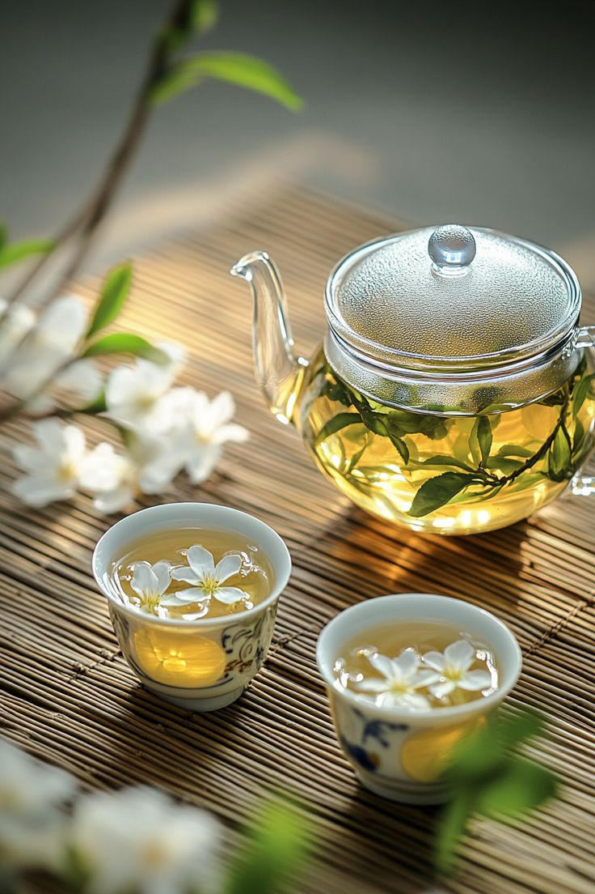
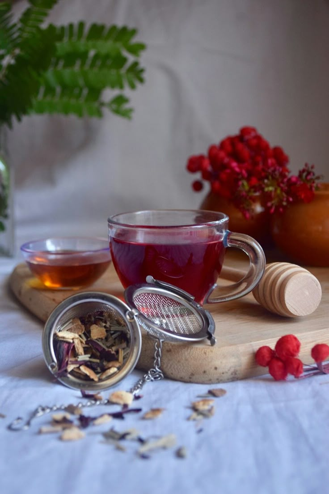
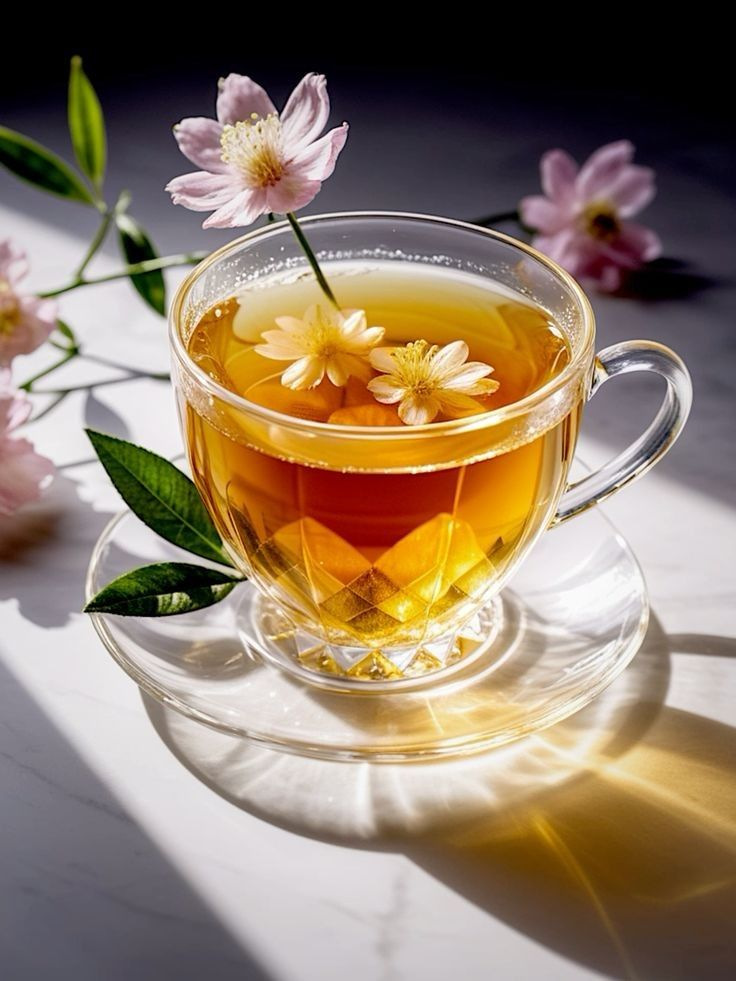
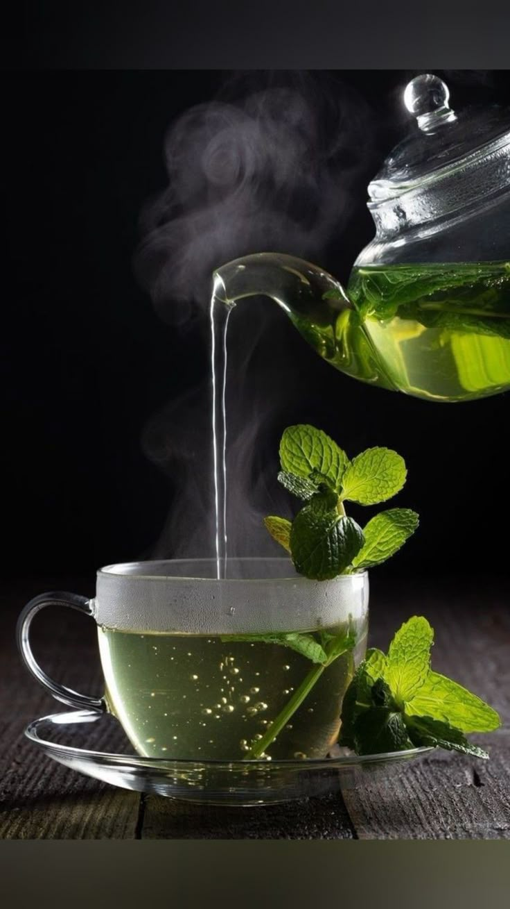

Tutoriales para disfrutar el Té
Aprende cómo preparar y apreciar el té perfecto, descubre sus propiedades únicas y explora variedades que harán que cada sorbo sea especial.
Propiedades del té negro
Infusiones creativas con té chai
Descubrí nuestros sabores



